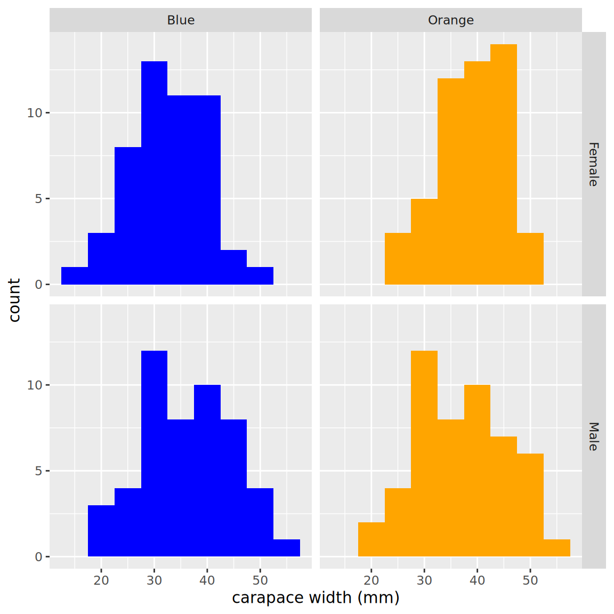
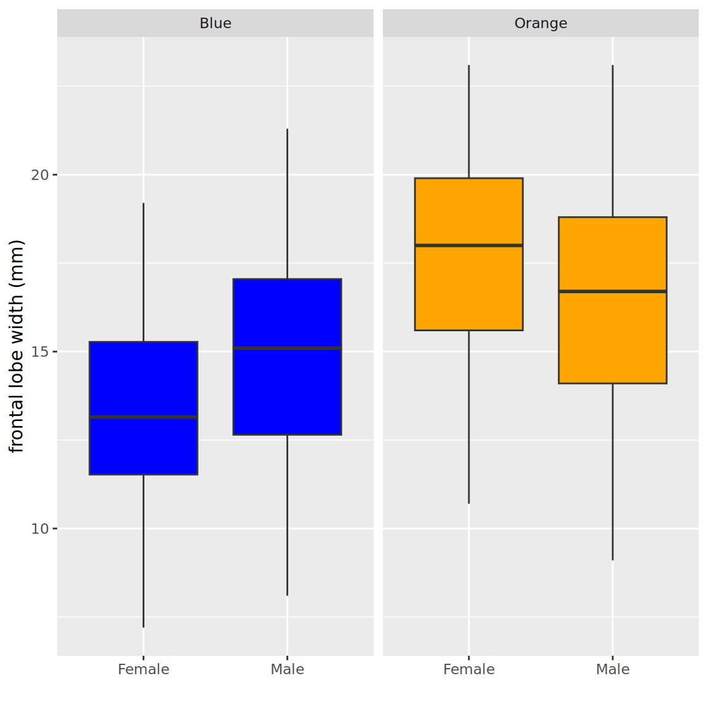

x = c("apple", "banana", "cherry")
y = c("red", "yellow", "red")
z = c(180, 120, 8)
my_df <- data.frame(x, y, z)
my_df x y z
1 apple red 180
2 banana yellow 120
3 cherry red 8Biol B215
Data frames are one of the most useful ways of organizing and storing data in R, and they are the format we will probably use most often. A data frame can be thought of like a spreadsheet. The data is arranged in rows and columns, where each row is a set of related data points (measurements from an individual, for example), and the columns are the different types of data that we collected (height, weight, eye color, etc.). This format makes it easy keep all related data together, while making it convenient to select subsets of the data for later analysis.
If you already have some data stored as vectors, you can put them together into a data frame using the data.frame() command. This will create a table with the names of the vectors as the column names.
x y z
1 apple red 180
2 banana yellow 120
3 cherry red 8If you want to specify the column names as something different from the vector name, you can do that within the call to data.frame, using single equal signs: the column name you want on the left, the data you want it to contain on the right.
fruit color grams
1 apple red 180
2 banana yellow 120
3 cherry red 8You can also look at the data frame in RStudio by clicking on it in the “Workspace” tab (it will be listed under “Data”). A tab will open in the upper left pane with the contents displayed in a neat table. Note that you can not edit the data there, only view it.
There are a number of ways to select subsets of data from a data frame. The first is to use the selection brackets, just as we did for vectors. The only difference is that we are now dealing with two dimensional data, so we have to specify both which row(s) and which column(s) we want, separated by a comma (rows first, then columns). If you want all rows or columns, you can leave the space before or after the comma, respectively, blank. For the columns, you can also give a vector of the column names that you want to select.
[1] 120 fruit color grams
2 banana yellow 120[1] "apple" "banana" "cherry" fruit grams
1 apple 180Often we want just a single column from the data frame, so there is a nice shorthand for that: the data frame followed by $ and the column name you want:
Another thing that we commonly want to do is to select rows based on some of the data in the data frame. We could do this with brackets and the dollar sign operator, but it can start to get unweildy, especially if you want to select on more than one aspect of the data at the same time (and I can’t tell you how many times I have gotten into trouble for forgetting the comma). Just for illustration, I am going to
fruit color grams
1 apple red 180
2 banana yellow 120 fruit color grams
1 apple red 180Luckliy, there is a much more convenient way of selecting rows in a situation like this: the subset() command. The first argument to subset() is the data frame we want to select from, and the second argument is the condition that we want the selected rows to to satisfy. What is especially convenient here is that we don’t have to retype the name of the data frame every time we want to use a different column, just the names of the columns is sufficient.
The subset command can also be used to select particular columns for the output, with the select argument:
There is at least one other way to work with data frames, which is found in the dplyr package (and more generally, packages in the so-called “tidyverse”. This package is optimized for large data, and ease of use, and it is worth a mention partly because it is what I have mostly switched over to for my own work. You can find much more about it at the RStudio site, and in particular with the Data Wrangling cheatsheet and the website for the Tidyverse. Note that dplyr uses a variant of data frames called “tibbles”, which you can create with tibble() instead of data.frame(). These two forms are mostly interchangable, but have different defaults, as discussed in part below.
To do the same selection as above, we use two different commands: filter() to select rows based on criteria, and select() to choose particular columns. Note that with filter we can set criteria in separate arguments (separated by commas), rather than having to use the & symbol. Similarly, I don’t need to use c() for the column names.
Attaching package: 'dplyr'The following objects are masked from 'package:stats':
filter, lagThe following objects are masked from 'package:base':
intersect, setdiff, setequal, union fruit color
1 apple redNote that you will only need to include the line library(dplyr) part once per session (or once per file). Including it more is not a problem, but not necessary either. If you do not have the dplyr package installed, you can install it with install.packages("dplyr") (or install all the tidyverse packages with install.packages("tidyverse")), but you should only need to do this once per computer.
If you want to get really fancy, you can take advantage of the “piping” feature of dplyr (which actually comes from a package called magrittr: Ceci n’est pas une pipe.). The way this works is that the %>% symbol puts whatever is to its left into the first argument of the function on its right (which you can then omit), allowing you to save typing, and also saving you the hassle of intermediate arguments. So the command above could be rewritten as follows:
You may have noticed that while we put a vector of strings into our data frame for fruit names and colors, what came out was not a vector of strings, but a factor. This is sometimes what you want, but not always. If you want to keep strings as strings, you can add one more argument to data.frame() after you specify all of the columns: stringsAsFactors = FALSE. If you want to, you can then convert individual rows to factors as I have done below, or you could create the data frame with explicitly described factors using factor().
fruit color grams
1 apple red 180
2 banana yellow 120
3 cherry red 8[1] "red" "yellow" "red" [1] red yellow red
Levels: red yellowAlternatively, you can use a tibble, a variant of a data frame with a few nice properties, one of which is that it does not use factors by default, and in general tries to avoid modifying data as much as possible.
You can join two data frames with the same kinds of columns together using rbind() (row bind), and you can add columns (or data frames with the same number of rows) with cbind() (column bind), or by naming a new column that doesn’t yet exist.
fruit color grams sold_individually
1 apple red 180.0 TRUE
2 banana yellow 120.0 TRUE
3 cherry red 8.0 FALSE
4 blueberry blue 0.5 FALSE
5 grape purple 2.0 FALSE
6 orange orange 140.0 TRUE fruit color grams sold_individually peel
1 apple red 180.0 TRUE FALSE
2 banana yellow 120.0 TRUE TRUE
3 cherry red 8.0 FALSE FALSE
4 blueberry blue 0.5 FALSE FALSE
5 grape purple 2.0 FALSE FALSE
6 orange orange 140.0 TRUE TRUEIf you want to do this with tibbles, the commands are a bit different (bind_rows() and bind_cols()), but the ideas are the same. Note that the bind_cols requires the vector used for the new row to have a name; it does not automatically assign one.
# A tibble: 6 x 4
fruit color grams sold_individually
<chr> <chr> <dbl> <lgl>
1 apple red 180 TRUE
2 banana yellow 120 TRUE
3 cherry red 8 FALSE
4 blueberry blue 0.5 FALSE
5 grape purple 2 FALSE
6 orange orange 140 TRUE # A tibble: 6 x 5
fruit color grams sold_individually peel
<chr> <chr> <dbl> <lgl> <lgl>
1 apple red 180 TRUE FALSE
2 banana yellow 120 TRUE TRUE
3 cherry red 8 FALSE FALSE
4 blueberry blue 0.5 FALSE FALSE
5 grape purple 2 FALSE FALSE
6 orange orange 140 TRUE TRUE There is also a function from dplyr() that is handy here: mutate() which is nice for creating new variables that depend on others (or modifying existing columns, though that can be dangerous):
# A tibble: 6 x 6
fruit color grams sold_individually peel n_per_kg
<chr> <chr> <dbl> <lgl> <lgl> <dbl>
1 apple red 180 TRUE FALSE 5.56
2 banana yellow 120 TRUE TRUE 8.33
3 cherry red 8 FALSE FALSE 125
4 blueberry blue 0.5 FALSE FALSE 2000
5 grape purple 2 FALSE FALSE 500
6 orange orange 140 TRUE TRUE 7.14Once you have your data in a data frame, it is time to start characterizing and describing it. There are a number of special functions you can use to make all of this easier, and I will go over some of those now. But first, we need some data to work with. The data we will use this time is measurements from rock crabs of the species Leptograpsus variegatus which were collected in Western Australia. The original data is from:
Campbell, N.A. and Mahon, R.J. (1974) A multivariate study of variation in two species of rock crab of genus Leptograpsus. Australian Journal of Zoology 22, 417–425.
but I actually got the data from a book on S, the predecessor to R:
Venables, W. N. and Ripley, B. D. (2002) Modern Applied Statistics with S. Fourth edition. Springer.
A file with the data can be downloaded at the following link: crabs.csv. Put it into the project folder you are currently using, then you can load the data as follows with read_csv(), then have a look at it with the str() command. (Note that I am using read_csv(), from the readr package, rather than the standard read.csv(), because it does not automatically make strings into factors. If you want to stick with read.csv, that would be fine, but you will have some slight differences in your data frames.)
Rows: 200 Columns: 8
-- Column specification --------------------------------------------------------
Delimiter: ","
chr (2): sp, sex
dbl (6): index, FL, RW, CL, CW, BD
i Use `spec()` to retrieve the full column specification for this data.
i Specify the column types or set `show_col_types = FALSE` to quiet this message.spc_tbl_ [200 x 8] (S3: spec_tbl_df/tbl_df/tbl/data.frame)
$ sp : chr [1:200] "B" "B" "B" "B" ...
$ sex : chr [1:200] "M" "M" "M" "M" ...
$ index: num [1:200] 1 2 3 4 5 6 7 8 9 10 ...
$ FL : num [1:200] 8.1 8.8 9.2 9.6 9.8 10.8 11.1 11.6 11.8 11.8 ...
$ RW : num [1:200] 6.7 7.7 7.8 7.9 8 9 9.9 9.1 9.6 10.5 ...
$ CL : num [1:200] 16.1 18.1 19 20.1 20.3 23 23.8 24.5 24.2 25.2 ...
$ CW : num [1:200] 19 20.8 22.4 23.1 23 26.5 27.1 28.4 27.8 29.3 ...
$ BD : num [1:200] 7 7.4 7.7 8.2 8.2 9.8 9.8 10.4 9.7 10.3 ...
- attr(*, "spec")=
.. cols(
.. sp = col_character(),
.. sex = col_character(),
.. index = col_double(),
.. FL = col_double(),
.. RW = col_double(),
.. CL = col_double(),
.. CW = col_double(),
.. BD = col_double()
.. )
- attr(*, "problems")=<pointer: 0xaaaae52db380> The str() command tells us the structure of data in a variable, and in this case it is telling us that crabs is a tibble, or tbl_df (which is also a kind of data.frame) with 200 rows (obs.) and 8 variables (columns), but the column names are a bit cryptic. The meaning of each column name is shown below:
| Variable | Description | |
|---|---|---|
| sp | species - “B” or “O” for blue or orange. | |
| sex | “M” or “F” for male or female | |
| index | index 1:50 within each of the four groups | |
| FL | frontal lobe size (mm) | |
| RW | rear width (mm) | |
| CL | carapace length (mm) | |
| CW | carapace width (mm) | |
| BD | body depth (mm) |
You can get a very nice quick summary of the data overall using the function summary():
sp sex index FL RW
Length :200 Length :200 Min. : 1.0 Min. : 7.20 Min. : 6.50
N.unique : 2 N.unique : 2 1st Qu.:13.0 1st Qu.:12.90 1st Qu.:11.00
N.blank : 0 N.blank : 0 Median :25.5 Median :15.55 Median :12.80
Min.nchar: 1 Min.nchar: 1 Mean :25.5 Mean :15.58 Mean :12.74
Max.nchar: 1 Max.nchar: 1 3rd Qu.:38.0 3rd Qu.:18.05 3rd Qu.:14.30
Max. :50.0 Max. :23.10 Max. :20.20
CL CW BD
Min. :14.70 Min. :17.10 Min. : 6.10
1st Qu.:27.27 1st Qu.:31.50 1st Qu.:11.40
Median :32.10 Median :36.80 Median :13.90
Mean :32.11 Mean :36.41 Mean :14.03
3rd Qu.:37.23 3rd Qu.:42.00 3rd Qu.:16.60
Max. :47.60 Max. :54.60 Max. :21.60 All that is nice, but it doesn’t really tell us too much, since what we really might want to know about this data is how the different kinds of crabs compare to each other. We have males and females, blue and orange crabs, so we should see if we can look at just one kind at a time. Lets look at the blue females first; we can select rows from the data frame by testing which rows have sp == "B" and sex == "F". Notice the double equals sign. This is the test for equality, as distinct from the single equal sign that you can use for assigning a value to a variable or function argument. Then we will calculate the mean and standard deviation of frontal lobe size (FL) for the female blue crabs.
[1] 13.27[1] 2.627814If you were trying to put all the crabs in a storage cage that had a hole size of 25 mm, you might expect that any crabs with a carapace length (CL) smaller than the holes would be able to escape (since they move sideways).
a. Create a histogram showing the size distribution of the crabs that you would expect to stay in the cage (measured by carapace length). Be sure to label your plot completely, including the total number of crabs that remain.
b. What proportion of crabs remaining in your cage would be female? What proportion would be orange?
c. What is the median body depth of the female, blue crabs that you would expect to escape?
Doing these calculations separately for each possible grouping of variables can be a bit tiresome, and if you wanted to a caculate statistic of the measurement variables (other than the ones that summary gave us), you would start to get a bit annoyed with typing the same thing over and over. Since this is an extremely common task, R has a variety of ways to help you do repetitive calculations like this more efficiently. The built-in functions are those in the “apply” family, so named because they allow you to apply any function to multiple subsets of your data at the same time. For example, you might want to calculate the median of every column of a data frame, or the mean of some measurement for each species of crab. Unfortunately, the built-in versions of these functions (eg. apply(), sapply(), lapply(), tapply()) are a bit quirky, so I tend not to use them. You should feel free to explore them on your own, but I almost never use them anymore. Instead, I use a set of replacement functions written by a statistician named Hadley Wickham, who also wrote the graphics package that I use most: ggplot2. We will come back to ggplot2, but for now lets focus on the data manipulation functions that are part of his dplyr package. (There is also a previous version with similar goals called plyr, but dplyr is much faster and a bit simpler in some ways. You may see me use both at times, but I’m trying to convert over to dplyr full time.)
Below is a brief introduction to working with dplyr; I highly recommend you check out the more complete description available at the dplyr website.
group_by() and summarize()Some of the most common functions we will use are group_by() and summarize(), which do just what they say. group_by() divides a data frame in to subgroups based on some condition, and summarize() (or summarise() if you are more comfortable with that) calculates statistics based on the data in those subgroups, returning the results as a new data frame, with one row per group. A simple example of its use is to find out how many observations (rows) are in each subset of the data, taking advantage of the function n(), which is also part of dplyr. (n() is largely equivalent to the base function nrow() which will tell you how many rows there are in a data frame, but it works with grouped data.)
So the steps are these: first divide up the data with group_by(). To do this you give the data frame as the first argument (this will become a pattern), then the remaining variables are the names of the columns that you want to divide the data based on. You don’t need to put them in quotes.
Next, you apply your function to the grouped data with summarize(). The first argument is the grouped data frame, and the rest are the summary statistics you wish to calculate. In this case, we will just use n() to give us a count of the number of rows. (Normally I would save the output, but I’m not going to in this case.)
`summarise()` has regrouped the output.
i Summaries were computed grouped by sex and sp.
i Output is grouped by sex.
i Use `summarise(.groups = "drop_last")` to silence this message.
i Use `summarise(.by = c(sex, sp))` for per-operation grouping
(`?dplyr::dplyr_by`) instead.# A tibble: 4 x 3
# Groups: sex [2]
sex sp `n()`
<chr> <chr> <int>
1 F B 50
2 F O 50
3 M B 50
4 M O 50As you can see, this makes a new tibble with the variables you split by in the first two columns, and the result of the calculation in the third. The title of that third function is a bit nasty, but we can actually provide a better name quite easily, by ‘naming’ the argument, just as we did with the data frames before:
`summarise()` has regrouped the output.
i Summaries were computed grouped by sex and sp.
i Output is grouped by sex.
i Use `summarise(.groups = "drop_last")` to silence this message.
i Use `summarise(.by = c(sex, sp))` for per-operation grouping
(`?dplyr::dplyr_by`) instead.# A tibble: 4 x 3
# Groups: sex [2]
sex sp count
<chr> <chr> <int>
1 F B 50
2 F O 50
3 M B 50
4 M O 50Counting rows is not exactly the most useful thing we could do with this data. What we really wanted to do was to calculate statistics on subsets of the data. If we wanted to calculate the mean of FL and the minimum of RW for the grouped crab data set, we could do that as follows.
`summarise()` has regrouped the output.
i Summaries were computed grouped by sex and sp.
i Output is grouped by sex.
i Use `summarise(.groups = "drop_last")` to silence this message.
i Use `summarise(.by = c(sex, sp))` for per-operation grouping
(`?dplyr::dplyr_by`) instead.# A tibble: 4 x 5
# Groups: sex [2]
sex sp count meanFL minRW
<chr> <chr> <int> <dbl> <dbl>
1 F B 50 13.3 6.5
2 F O 50 17.6 9.2
3 M B 50 14.8 6.7
4 M O 50 16.6 6.9The functions that you pass in to summarize don’t have to be as simple as the ones I just showed; you could calculate the 80% quantile of the difference between the square root of the carapace width and frontal lobe cubed, though I doubt you would want to. The only limitation is that each of the functions should return a single value, or you will get an error.
a. Calculate the mean, and variance, and standard error for each of carapace length, carapace width, and the difference between width and length for each of the species/sex combinations.
b. Which species tends to be larger (by these measures)? Which sex?
c. What can you tell about the relationship between carapace length and carapace width by comparing the variances of each of those quantities to the variance of their difference?
Once we have our data arranged nicely in a data frame, it is easy to use it in plots, and to take advantage of some of the fancier features in the ggplot2 package that I mentioned earlier. In particular, we can take advantage of “faceting”, the ability to make multiple small plots with the same axes, which makes comparison across groups easier. I’ll just present some examples here to give you a bit of inspiration, and as a preview for next week.
# Rename the column names and factor labels
# so they are more understandable in the plot legend.
# Make new columns with the new names first using mutate and creating factors with better names.
# Be careful to get them in the correct order (alphabetical)!
crabs <- crabs %>%
mutate(Sex = factor(sex, labels = c("Female", "Male")),
Species = factor(sp, labels = c("Blue", "Orange"))
)
library(ggplot2)
ggplot(crabs, aes(x = CW, fill = Species)) +
geom_histogram(binwidth = 5) +
facet_grid(Sex ~ Species) +
xlab("carapace width (mm)") +
theme(legend.position = "none") + # hide the redundant legend
scale_fill_manual(values = c("blue", "orange")) #choose logical colors, rather than using defaults
